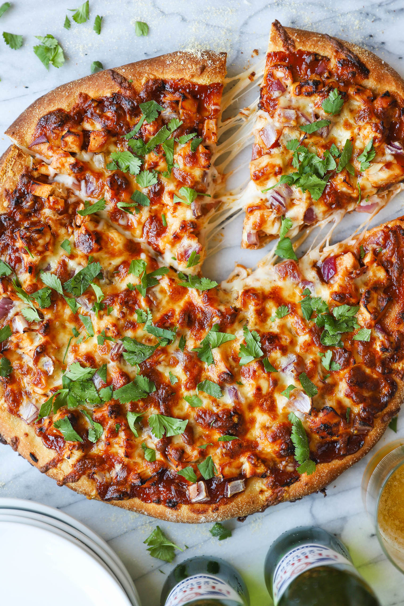

BBQ Chicken Pizza

Ingredients
- 1 (12 inch) pre-baked pizza crust
- 1 cup spicy barbeque sauce
- 2 skinless boneless chicken breast halves
- cooked and cubed
- 1 cup sliced pepperoncini peppers
- 1 cup chopped red onion
- ½ cup chopped fresh cilantro
- 2 cups shredded Colby-Jack cheese
Procedure
-
STEP 1
Heat oven to 220C/200C fan/gas 7. Tip the flour into a mixer with a dough hook, or a bowl. Add the yeast, salt, oil and 200ml warm water then mix well to a very soft dough. Knead in the food mixer for about 5 mins, but if making this by hand, tip onto a work surface and knead for about 10 mins. The dough is sticky, but try not to add too much extra flour. Leave in the bowl and cover with a tea towel while you halve and slice the peppers and onions. -
STEP 2
For the topping: toss the peppers and onions with the oil and fennel seeds then roast for 15 mins. Meanwhile mix the barbecue sauce and tomato purée with 5 tbsp water. -
STEP 3
Take the dough from the bowl and press into the base and up the sides of an oiled 25x35cm Swiss roll tin. Don’t knead the dough first otherwise it will be too elastic and will keep shrinking back. Spread with two thirds of the barbecue sauce mix then add the remainder to the chicken and toss well to coat it. -
STEP 4
Take the roasted pepper mixture from the oven and spread on top of the pizza. Scatter over the tomatoes then evenly spoon on the barbecue chicken. Scatter with the cheese and bake for 15 mins. Serve with a salad or healthy coleslaw.